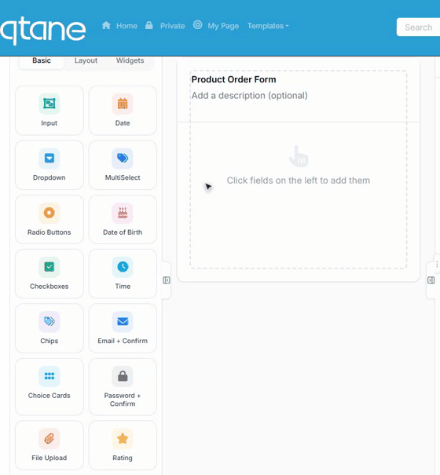
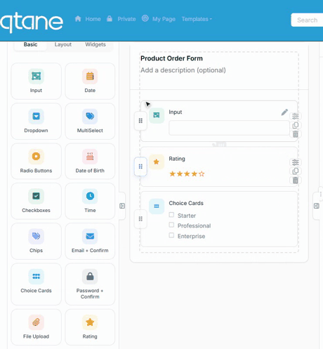

Drag & Drop and Layout (Rows / Columns)
The Form Builder canvas is fully drag-and-drop: pull controls in from the palette, reorder them by dragging, and use the Row / Columns control to place fields side by side.
Adding controls: click or drag
Two ways to add any control from the palette:
- Click a tile — the field is appended to the end of the form.
- Drag a tile onto the canvas — a ghost tile follows your cursor and the field is inserted where you drop it.

Each field added this way gets sensible defaults (label, key, options) that you then refine in the Design rail on the right — see the Controls & Widgets Reference for what every tile does.
Drag to move (reorder)
Every field on the canvas has a ⋮⋮ drag handle on its left edge. Grab it and drag the field up or down — the other fields animate out of the way, and the new order is saved with the form. Next to the handle you'll also find quick actions to duplicate and delete the field, and clicking any field selects it for editing in the right rail.
Tip: you can also copy/paste fields with Ctrl+C / Ctrl+V and duplicate with Ctrl+D while a field is selected.
Rows & columns: side-by-side layout
Forms read better when related short fields share a line. Drop the Row / Columns control (Layout tab) onto the canvas, pick a column layout, then drag fields from the palette straight into each column:

The layout picker in the row header offers: 1, 2, 3 or 4 equal columns, plus asymmetric splits — ⅔ + ⅓, ⅓ + ⅔, ¼ + ¾ and ¾ + ¼. You can change the layout at any time; existing fields flow into the remaining columns.
A few rules to know:
- Add fields to a row from the palette — drag a tile directly into a column ("Drop field" placeholders show you where). Fields already sitting at the top level of the canvas are reordered on the canvas itself; build rows from palette tiles.
- Fields inside a row can be dragged between its columns.
- Rows cannot be nested inside other rows.
- On small screens the columns stack automatically — the published form stays responsive.
Field width — the lightweight alternative
For a quick two-column feel without a Row, select any field and set its Width in the Design rail: Full (100%), Half (50%), Third (33%), Two-Thirds (66%) or Quarter (25%). Adjacent fields with partial widths share the same line.
Flex Grid (12-col)
For free-form layouts, the Flex Grid control creates a 12-column CSS grid; use the in-cell + Add button to place fields in any cell and span them across columns. Rows are simpler and cover most forms — reach for the grid when you need pixel-precise dashboards or dense intake sheets.
Multi-page forms
Long form? Drop a Section Break (Layout tab) where a new page should start and tick Start new page here. The published form becomes a multi-step wizard with Previous/Next buttons and a progress indicator. Combine with the review-before-submit option in After Submission so respondents can check all answers on one screen.
Where to go next
- What every palette tile does: Controls & Widgets Reference
- Confirmation screens, emails and notifications: After Submission
- The rest of the builder (tabs, theming, rules): Form Builder